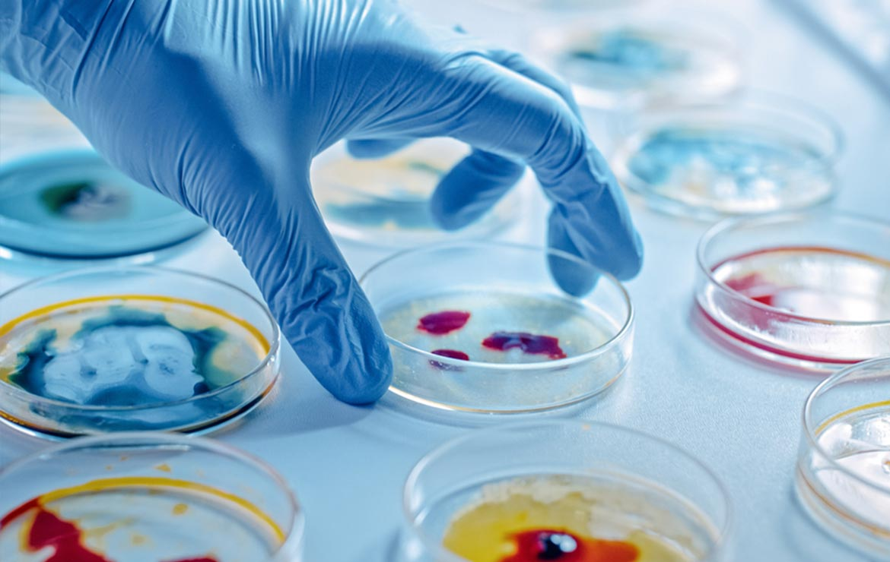

La ecología es la rama de la biología que estudia las relaciones de los diferentes seres vivos entre sí y su relación con el entorno: «la biología de los ecosistemas». Estudia cómo estas interacciones entre los organismos y su ambiente afectan a propiedades como la distribución o la abundancia.

Son considerados microbios todos aquellos seres vivos microscópicos, estos pueden estar constituidos por una sola célula (unicelulares), así como pequeños agregados celulares formados por células equivalentes (sin diferenciación celular); estos pueden ser eucariotas (células que poseen envoltura nuclear) tales como hongos y protistas; y procariotas (células sin envoltura nuclear) como las bacterias. Sin embargo la microbiología tradicional se ha ocupado especialmente de los microorganismos patógenos entre bacterias, virus y hongos, dejando a otros microorganismos en manos de la parasitología y otras categorías de la biología.
Agar sangre, cultivo de Staphylococcus aureus.
Aunque los conocimientos microbiológicos de que se dispone en la actualidad son muy amplios, todavía es mucho lo que queda por conocer y constantemente se efectúan nuevos descubrimientos en este campo. Tanto es así que, según las estimaciones más habituales, solo un 1 % de los microbios existentes en la biosfera han sido estudiados hasta el momento. Por lo tanto, a pesar de que han pasado más de 300 años desde el descubrimiento de los microorganismos, la ciencia de la microbiología se halla todavía en su infancia en comparación con otras disciplinas biológicas tales como la zoología, la botánica o incluso la entomología.
Al tratar la microbiología sobre todo los microorganismos patógenos para el hombre, se relaciona con categorías de la medicina como patología, inmunología y epidemiología.
Historia
Microscopio de Buffon en París
La microbiología, como ciencia, existe aproximadamente desde la segunda mitad del siglo xix. En el siglo iii antes de Cristo, Teofrasto, sucesor de Aristóteles en el liceo, escribió gruesos volúmenes acerca de las propiedades curativas de las plantas. Aunque el término bacteria, derivado del griego βακτηριον ("bastoncillo"), no fue introducido hasta el año 1828 por Christian Gottfried Ehrenberg, ya en 1676 Anton van Leeuwenhoek, usando un microscopio de una sola lente que él mismo había construido basado en el modelo creado por el erudito Robert Hooke en su libro Micrographia, realizó la primera observación microbiológica registrada de "animáculos", como van Leeuwenhoek los llamó y dibujó entonces.
Eugenio Espejo (1747-1795) publicó importantes trabajos de medicina, como las Reflexiones acerca de la viruela (1785), el cual se convertiría en el primer texto científico que refería la existencia de microorganismos (inclusive antes que Louis Pasteur) y que definiría como política de salud conceptos básicos de la actualidad como la asepsia y antisepsia de lugares y personas.
La bacteriología (más tarde una subdisciplina de la microbiología) se considera fundada por el botánico Ferdinand Cohn (1828-1898). Cohn fue también el primero en formular un esquema para la clasificación taxonómica de las bacterias.
Louis Pasteur (1822-1895), considerado el padre de la Microbiología Médica, y Robert Koch (1843-1910) fueron contemporáneos de Cohn. Quizá el mayor triunfo de Pasteur consistió en la refutación mediante cuidadosos experimentos de la por aquel entonces muy respetada teoría de la generación espontánea, lo cual permitió establecer firmemente a la microbiología dentro de las ciencias biológicas. Pasteur también diseñó métodos para la conservación de los alimentos (pasteurización) y vacunas contra varias enfermedades como el carbunco, el cólera aviar y la rabia. Robert Koch es especialmente conocido por su contribución a la teoría de los gérmenes de la enfermedad, donde, mediante la aplicación de los llamados postulados de Koch, logró demostrar que enfermedades específicas están causadas por microorganismos patogénicos específicos. Koch fue uno de los primeros científicos en concentrarse en la obtención de cultivos puros de bacterias, lo cual le permitió aislar y describir varias especies nuevas de bacterias, entre ellas Mycobacterium tuberculosis, el agente causal de la tuberculosis.
Mientras Louis Pasteur y Robert Koch son a menudo considerados los fundadores de la microbiología, su trabajo no reflejó fielmente la auténtica diversidad del mundo microbiano, dado su enfoque exclusivo en microorganismos de relevancia médica. Dicha diversidad no fue revelada hasta más tarde, con el trabajo de Martinus Beijerinck (1851-1931) y Sergei Winogradsky (1856-1953). Martinus Beijerinck hizo dos grandes contribuciones a la microbiología: el descubrimiento de los virus y el desarrollo de técnicas de cultivo microbiológico. Mientras que su trabajo con el virus del mosaico del tabaco estableció los principios básicos de la virología, fue su desarrollo de nuevos métodos de cultivo el que tuvo mayor impacto inmediato, pues permitió el cultivo de una gran variedad de microbios que hasta ese momento no habían podido ser aislados. Sergei Winogradsky fue el primero en desarrollar el concepto de quimiolitotrofía y de este modo revelar el papel esencial que los microorganismos juegan en los procesos geoquímicos. Fue el responsable del aislamiento y descripción por vez primera tanto de las bacterias nitrificantes como de las fijadoras de nitrógeno.